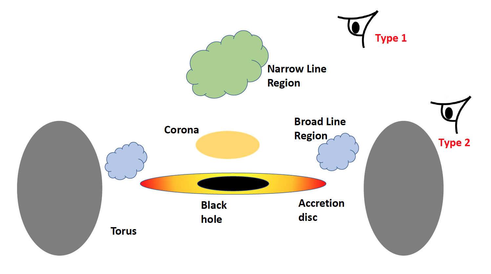

What are AGN?
Active galactic nuclei or AGN are simply supermassive black holes at the centre of galaxies that are ‘active’ because processes are occurring that makes these objects very luminous. It is believed that most galaxies in the Universe host a supermassive black hole, but not all of them are active. Active galaxies are extremely bright in their cores, sometimes outshining the stellar emission within their host galaxies.
They are active because material, e.g. gas, dust, plasma, is feeding the supermassive black hole via the process known as accretion. This material, in the form of a ring (called an accretion disk ) circles the black hole. The closer the material gets to the black hole, the faster it orbits. At the edge of the disk closest to the black hole, the speed of the material approaches the speed of light, and here it accretes onto the black hole, passing the event horizon never to be seen again.

Image from: commons.widimedia.org .
As the material moves around the black hole, the particles and clumps within it collide with each other, losing or gaining energy, such that the temperature of the disk rises. The closer to the black hole, the hotter the disk gets. This heat energy is then radiated away as light. This accretion processes is extremely efficient at converting the energy bound within the particles of the disk to electromagnetic radiation – this is what makes AGN superbly bright.
AGN emit wavelengths across the electromagnetic spectrum . Ultraviolet and optical photons are radiated from the disk, X-ray originate from a plasma cloud called the corona, while infrared radiation is associated with dust from further away. In addition, some AGN produce radio emission from highly powered jets. These types of AGN are called ‘radio-loud’ AGN, whilst those that do not have these jets are called ‘radio-quiet’ .
AGN are made up of the same constituents: the black hole and accretion disk, the X-ray corona, a torus (dust and gas in the form of a donut that surrounds the central black hole), and two emitting plasmas : the broad and narrow line regions. This is known as the unification theory of AGN .
In addition to AGN being classed as either radio-loud or radio-quiet, depending on the radio emission, we can also classify AGN based on how we view them. This means, if we view an AGN and the torus blocks our view of the central black hole, we only see the emission coming from the narrow line region. These AGN are called 'type 2' AGN. Alternatively, if we view the AGN through the hole in the torus, we can see both broad and narrow emission from these plasmas. 'type 1' AGN.
